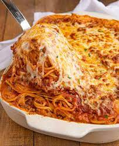

Odin Recipes

Delicious Baked Spaghetti
A take on a class dish that we all know and love with just one more step to make it even more delicious. Everbody craves spaghetti every now and then. It is meaty and saucy with satisying al dente noodles. There is nothing like a great baked spaghetti dish to enjoy for dinner and even better as leftovers for the next few days.
This is a simple recipe that anyone can follow with basic ingredients that can probably already be found in the fridge and drawers, if not, they are easy to find at the grocery stores. This is an easy to follow 6 step recipe that will only take about one hour to make. Please look forward to making this at home for your next dinner.
- 1 (16 ounce) package spaghetti
- 1 pound ground beef
- 1 onion, chopped
- 1 (32 ounce) jar meatless spaghetti sauce
- 1/2 teaspoon seasoned salt
- 2 eggs
- 1/3 cup grated Parmasan cheese
- 5 tablespoons butter, melted
- 2 cups small curd cottage cheese, divided
- 5 cups shredded mozzarella cheese, divided
- Preheat the oven to 350 degrees F (175 degrees C). Lightly grease a 9x13-inch baking dish.
- Bring a large pot of lightly salted water to a boil. Cook spaghetti in boiling water, stirring occasionally, until tender but firm to the bite, about 12 minutes. Drain.
- Heat a large skillet over medium heat. Cook and stir beef and onion in the hot skillet until meat is browned and onion is soft and translucent, about 7 minutes. Drain excess oil from the pan. Stir in spaghetti sauce and seasoned salt.
- Whisk eggs, Parmesan, and butter in a large bowl. Add spaghetti and toss to coat.
- Place 1/2 of the spaghetti mixture in the prepared dish. Top with 1/2 of the cottage cheese, 2 cups mozzarella, and 1/2 of meat sauce. Repeat layers. Cover with aluminum foil.
- Bake in the preheated oven for 40 minutes. Remove the foil and sprinkle with remaining mozzarella. Continue to bake until cheese is melted and lightly browned, 20 to 25 minutes.
Spaghetti